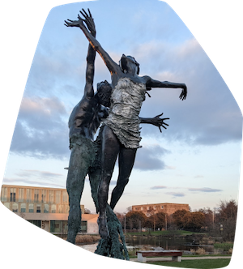

Home
University Climate Challenge
Research brief

Funded by
UCD College of Social Sciences and Law Seed Funding
Research team
Orla Kelly
School of Social Policy, Social Work and Social Justice
Orla specialises in studying sustainable human well-being, eco-social policies, sustainable development, and the social dimensions of climate change. She has expertise in quantitative research and mixed methodologies.
Gabriela Martinez Sainz
School of Education
Gabriela specialises in children’s rights and education for sustainable development, in particular, understanding how key elements essential for global, plural and sustainable societies – such as sustainability, human rights and citizenship– are taught and learnt.
Daniel Capistrano
School of Education and Geary Institute
Daniel specialises in educational indicators and social outcomes of schooling in different societies. His research spreads across distinct fields such as comparative education, public policy, sociology of education and social research methods.
We would also like to acknowledge the contributions of Aidan Ring in the initial phases of the project.